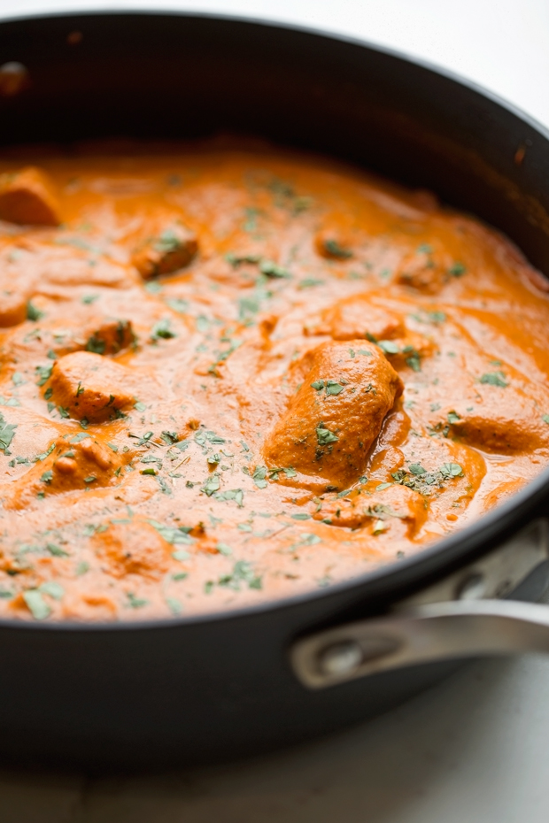

Home
Butter Chicken

Description
Bring the taste of an Indian butter chicken dish to your home. Marzia, of Little Spice Jar, shares a tasty recipe, passed down to
her by her mom. Pair with rice and/or nann to bring home that authentic experience that you would normally only
get at the finest of Indian restaurants.
Ingredients
- Boneless, skinless chicken breasts or thighs
- Seasons: tandoori masala, garam masala, cumin powder, coriander powder, and some red chili powder
- Fenugreek Leaves
- Fresh Ginger and Garlic
- Avocado, canola, coconut oil
- Plain yogurt
- Ghee
- Can of Crushed Tomatoes
- Large cut into thin slices
- Heavy Cream
- Prepared Rice or Naan Bread
Steps
- Marinate the chicken for maximum flavor. Whisk the ginger garlic paste, yogurt, and seasoning together until
the yogurt is smooth. Add the chicken piece and let this hang out. The longer you marinate the more
flavorful the chicken. Ideally, you want to let it go for 12-24 hours, covered in the refrigerator, but even
20-60 minutes will do. The yogurt, ginger, and garlic really help make the chicken more tender. As always,
I'm a fan of white-meat chicken, so I used boneless skinless chicken breasts, but you could go the dark meat
route and use chicken thighs as well. Some may even tell you it's more flavorful that way. I'm not one of
those people!
- Make the butter chicken curry. To a Dutch oven or any heavy bottom pan, add the ghee and saute the onions
over medium high heat until they are soft and translucent. Add the ginger and garlic paste and give it a few
seconds to bloom in the oil. Add the seasonings - chili powder, cumin, and coriander and let the spices cook
in the oil. Stir often to keep them from sticking and burning. If you find the spices are cooking too
quickly, you can add a splash of water or even chicken broth if you'd like. Blend the sauce in a traditional
blender or use an immersion blender to make this quick and easy.
- Make ahead option. At this point, you can refrigerate the butter chicken sauce once it's cooled down in an
airtight container. You can also add it to a freezer-safe container or zippable bag and freeze it. This
makes weekday dinner so much quicker to get out on the table. Marinate the chicken on Sunday and pull it
together in about 20 minutes on a Monday. That's faster than ordering take-out and trust me, it tastes
better too!
- Finish it up. Remove the marinated chicken from the refrigerator 30 minutes before cooking. This is so that
the yogurt has a chance to come to room temperature. I find that if you add it cold from the fridge the
temperature difference sometimes causes the yogurt to curdle. To another clean pot or if you used a
traditional blender, to the same pot add the remaining oil and heat it over medium heat. Add the marinated
chicken. You want to discard any additional marinade. Saute the chicken until it's golden on add aides. Add
the prepared butter chicken sauce to the pot and stir to combine. You want to let the chicken finish cooking
before you and the heavy cream and 1/2 teaspoon garam masala. Once the sauce reaches a simmer, taste and
adjust the salt as needed. Then crush the fenugreek leaves between the palms of your hands to release their
flavor and add them to the butter chicken. Butter chicken over fluffy basmati rice, it's what my dreams are
made of. If you're looking for an authentic murgh makhani recipe, I've got you!